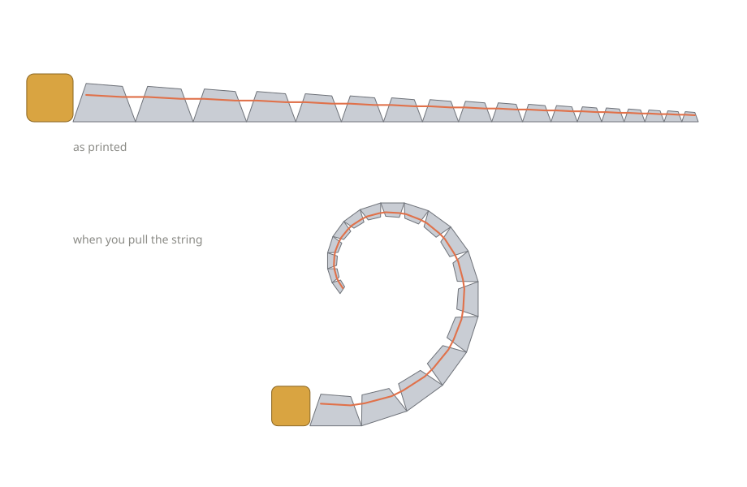
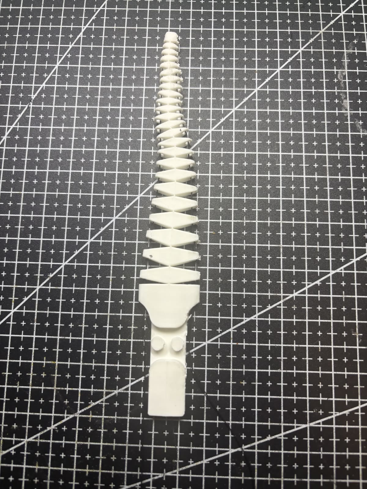
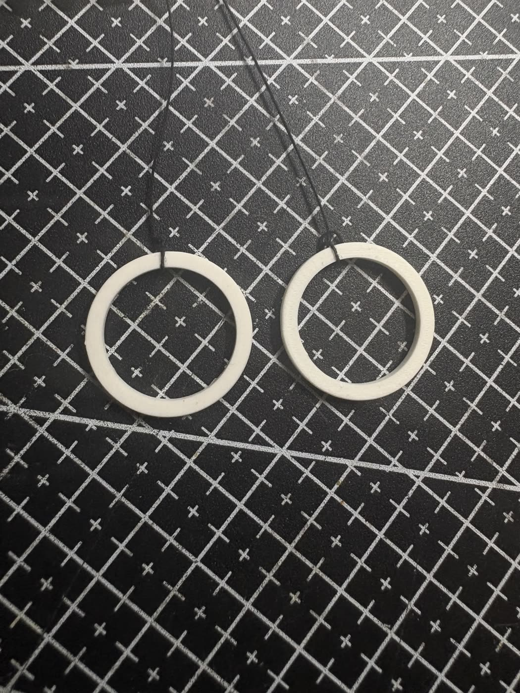
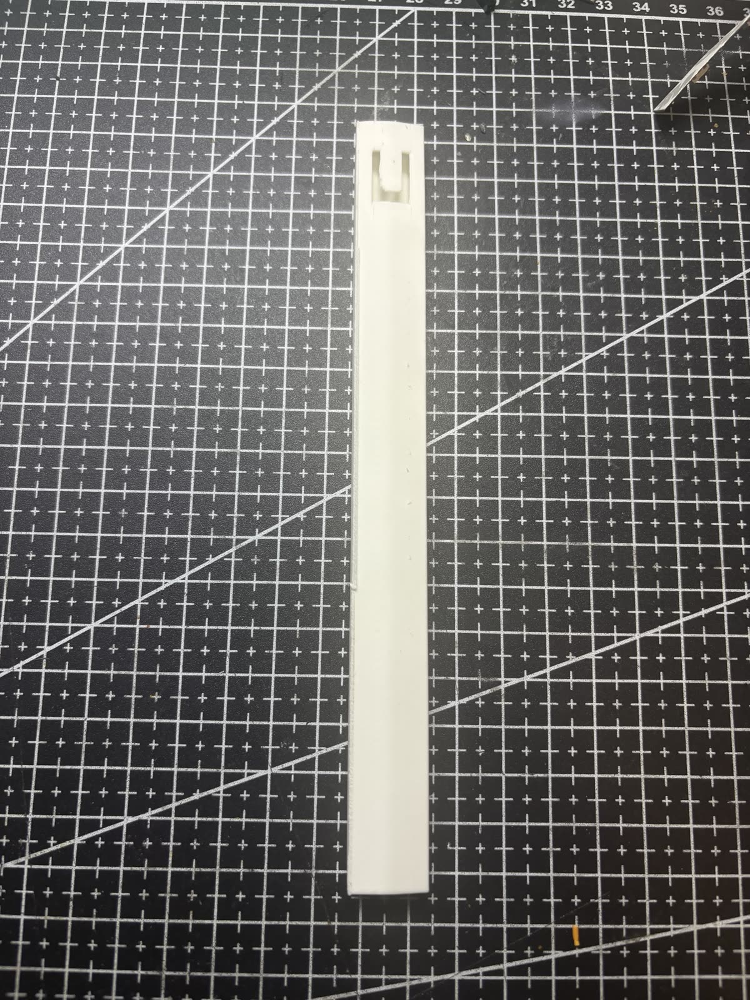

Every segment is a copy
Each one is the same shape as the one before it, a little smaller every time, with a V-shaped gap cut between each pair. Pull, and all those gaps close together, and the arm settles into the spiral on its own.
A printed arm that grabs anything
It curls up when you pull a string, wrapping tight at the tip and wide at the base at the same time. The same arm picks up something small like a screw or something fat like a roll of tape.
Watch it workDemo video goes here
dropdemo.mp4 into /media
01 The idea
A normal gripper is only good at one size. Jaws big enough for a bottle will crush a marble, and jaws sized for a marble cannot reach around a bottle. You end up building a different gripper for every job.
A spiral does not really have a size.
It is tight in the middle and keeps opening out as it goes, and the shape stays the same the whole way, just bigger. So when the arm curls into one, it is making a small loop and a big loop at once, and the object ends up in whichever part of it fits.


Each one is the same shape as the one before it, a little smaller every time, with a V-shaped gap cut between each pair. Pull, and all those gaps close together, and the arm settles into the spiral on its own.
It runs through a channel inside the arm, closer to the inner edge than the outer one. That is the whole trick. Pulling it folds the joints shut instead of squeezing the arm lengthwise, and the tip closes first because there is less plastic up there to fight it.
02 Flat on the desk
A roll of tape lying flat has almost nothing to hold on to. There is no edge to pinch, so a normal gripper just pushes it around the desk. The arm gets under the edge and closes around it instead, reshaping itself against the desk as it curls.
Video goes here
dropflat-pickup.mp4 into /media
03 Build log
On paper this looks like it is just a shape. Most of the real work has been the stuff the shape does not tell you.
The first thing I tried was writing a script that builds the arm for you, since the moment you change the curl even a little, every segment changes with it. That worked and it was a good way to understand the shape, but the version that actually got printed is modelled in Onshape. The script stayed as a test and a way to check my numbers.
The string has to run through the inside of the arm, and it has to sit closer to one edge than the other or the thing will not fold. Lining that channel up through every segment, while each segment is a different size, took a few goes in CAD before it came out straight.
The first print curled fine for a few pulls and then snapped at the very bottom. Makes sense looking back. The bottom joint is holding the whole arm, so everything you pull ends up loaded onto that one thin piece of plastic, and it had a sharp corner in it, which is exactly where a crack likes to start.
Looked up how other people deal with this and the answer was the same everywhere: never leave a sharp inside corner where the load is. So I rounded out the bottom of every gap instead of letting them come to a point. Same arm, same curl, the stress just has somewhere to spread instead of all landing on one line. The second print has held up.
Pulling a bare string with your fingers is awkward and you lose track of how far you have gone. So I printed a ring for each end, one for closing and one for opening. A finger in each ring and you can work the arm properly, which made testing way quicker and means I can feel exactly how hard it is pulling.

Holding the arm itself while pulling the string does not work. You end up fighting your own grip, and squeezing the segments changes how it curls. So there is a handle the whole thing mounts onto. You hold that, the arm stays free, and both hands are doing one job each instead of three.

04 Either direction
Left or right, it holds the same, so you are not stuck approaching an object from one side.
Up and down is the part it cannot do yet. That is the next thing to figure out.
Video goes here
dropboth-ways.mp4 into /media
05 Where it goes
Anything awkward. Things that are round, uneven, fragile, or sitting flat with no edge to grab. A claw has to be aimed and sized for the object, and this does not, so one arm covers a whole range of shapes that would otherwise need their own tool. It also spreads its grip over a lot of surface instead of pinching two points, so it holds without crushing.
It only curls in one plane. Left and right work, up and down does not, so there is a whole axis of movement missing and that is the next thing to solve. After that, pulling the string by hand is the limit. Driving it properly instead of by finger is what would turn it from something I demo on a desk into something that could actually sit on the end of an arm.
06 Where this is going
This page is the first one. The other two get added here as they happen.
Rebuild something that already exists and find out what gets left out when people write it up. Print it, break it, fix it, get it picking things up.
Take the version that works and push on it. Change things, test what actually holds, and get it better than where it started.
Use what the first two taught me to build something that is mine.